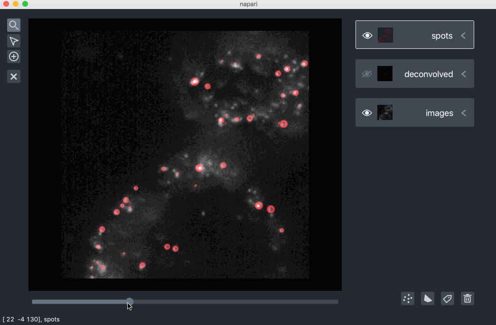

napari gallery¶
Welcome to the napari gallery!
This gallery contains examples showing real scientific data visualized and annotated with napari. Note that some of these examples were made with napari 0.1, before the UI upgraded in the 0.2 release, so they layout might look a little different in your version of napari, but all these functionalities and more are still supported.
Examples¶
pathology data¶

This example shows an ~100k x 200k pixel pathology slide from the camelyon 16 challenge for cancer detection in pathology images. We converted the multiresolution image pyramid data into a zarr file, which we could lazily read using dask, a python library for flexible parallel computation.
We visualized the slide using a Pyramid layer.
This layer allows us to dynamically swap in different resolution levels and image tiles depending on the zoom level
so we can easily browse this large dataset without having to load it all into memory.
We also extracted the coordinates of two tumors on this slide and visualized them us a Shapes layer.
During the gif you can see us add a new Shapes layer and start drawing shapes over both whole areas of tissue and individual cells.
lattice light-sheet data¶

This example browses over 100GB of lattice lightsheet data, representing a volumetric timeseries.
Using the sliders, we can move through both the z dimension and the time dimension.
The data is stored on disk as a zarr file,
which are lazily reading using dask.
Or rendered in 3D as a volumetric timeseries.

Note that the volume has been downsampled in each spatial axis by a factor of four before displaying it.
neural calcium imaging data¶

This example shows calcium imaging of neurons to record neural activity
and is one of the example datasets in the neurofinder image segmentation challenge.
The bottom Image layer contains timeseries of the neural activity.
The top Labels layer contains the segmented neuron regions.
The middle two Image layers contain helpful processed maps,
the mean and the local correlation of the timeseries.
In this example we use the paintbrush and fill bucket tools in the Labels layer
to separate two regions that were incorrectly merged and two add two regions that were missed.
mesoscope neural imaging data¶

This example shows neural activity recorded with the 2-photon random access mesoscope.
The bottom Image layer contains the underlying timeseries of neural activity.
The subsequent Image layers contain processed maps,
such as the mean, local correlation or colored correlations with other timeseries data.
electron microscopy data¶

This example shows 3D electron microscopy data from the CREMI circuit reconstruction challenge.
The bottom Image layer contains the underlying electron microscopy image.
The Labels layer immediately above it contains the segmentation mask,
where each colored region corresponds to one neuron.
Pre- and post-synaptic sites are marked with Points layers.
allen brain reference atlas¶

This example shows the allen brain reference atlas,
a 3D map of the mouse brain, including its division into different brain areas.
The bottom Image layer contains the underlying grayscale representation of the reference brain,
and the top Labels layer contains the divisions into different brain regions,
where each colored region corresponds to a different part of the brain.
image-based transcriptomic data¶

This example shows some image-based transcriptomics data analyzed with the starfish tool.
Each spot in the image corresponds to an mRNA molecule.
The bottom Image layer is the raw image data.
The middle Image layer is the raw data after a learnt deconvolution,
and the top Points layer corresponds to the detected mRNA spots.
We can also visualize the raw and deconvolved layers as 3D volumes using the Volume layer.

Here the raw volume is shown in a red colormap,
and the deconvolved volume is shown in a green colormap.
Data courtesy of Tim Wang, Svoboda Lab.
cell biology data¶

This example shows images of cells under brightfield and fluorescent imaging.
There are four color channels of flourescently label data all blended together,
showing the cell nuclei and the distribution of targets of interest.
The top Labels layer shows some hand drawn regions around the nuclei,
which can be seen in blue.
We can also visualize the flourescent data as Volume layers too.

Data from Allen Cell.
more cell biology data¶

This example shows 3 color channels of data of cell nuclei, membranes, and cytoplasm
represented using three different Image layers with different colormaps, blended together.
The top Points layer contains markers over the centers of the cell nuclei.
The second from the top Shapes layer,
contains polygon representations of the boundaries of the cells.
Data from ImageJ examples.
During the example we edit the position of some of the points and shapes, including deleting existing ones and adding new ones.
volumetric rendering data¶

This example shows 3D rendering of a stent and includes the changing of colormaps and color limits. Data from vispy examples.

kaggle nuclei segmentation data¶

This example browses data from the 2018 kaggle data science bowl on nuclei segmentation.
The raw images are visualized using an Image layer
and the segmentations are visualized using a Labels layer.
We are using dask-image to look at directories of the images and labels and lazily them when requested by the slider. This method can support easy browsing of training datasets with many examples as we never need to load all the images into memory. Note that not all images need to be the same size either.
We can also edit or create our own segmentations using the paintbrush and fill bucket tool in the Labels layer.

machine learning data¶

This example shows data from a hymenoptera classification task where the goal is to separate the images of the ants and bees. Here we are using dask-image to look at two directories of images and lazily load each image when requested by the slider. This method can support easy browsing of training datasets with many images as we never need to load all the images into memory. Note that not all images need to be the same size either.